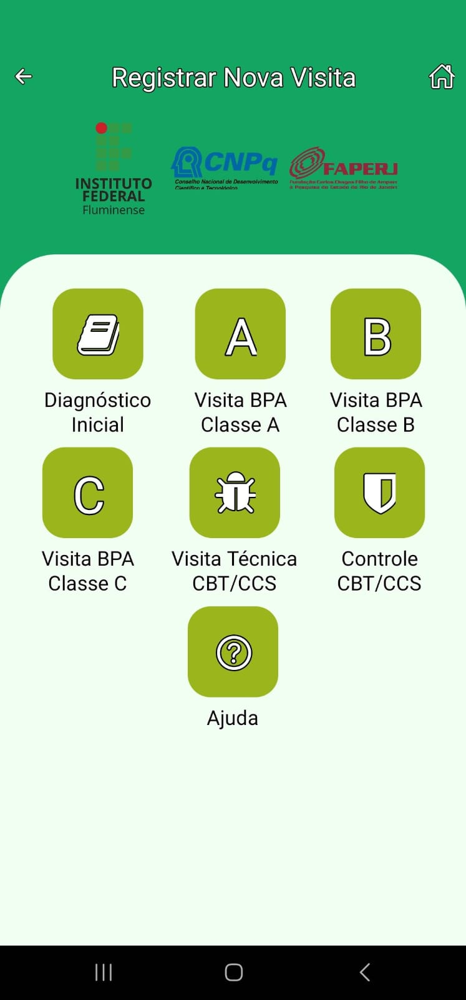
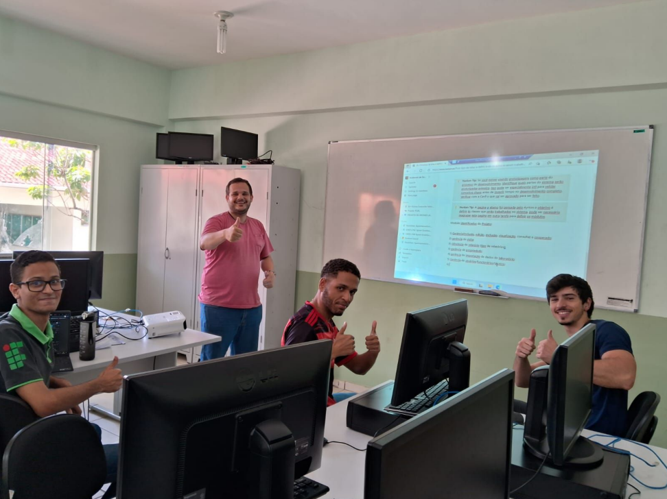
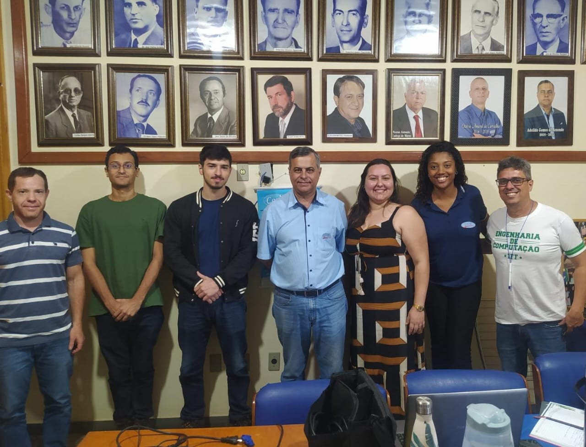
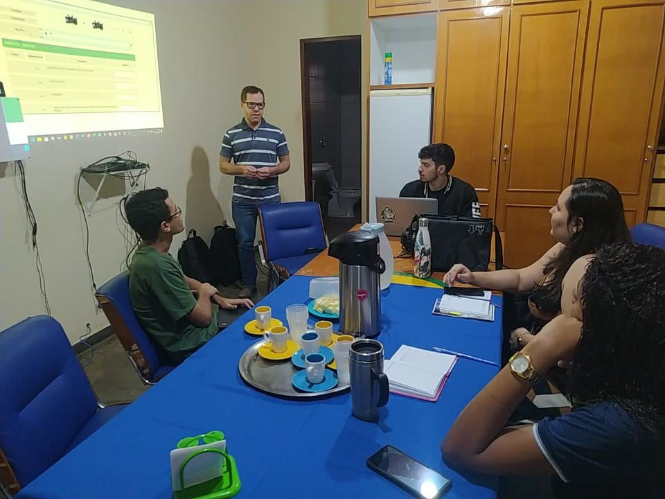
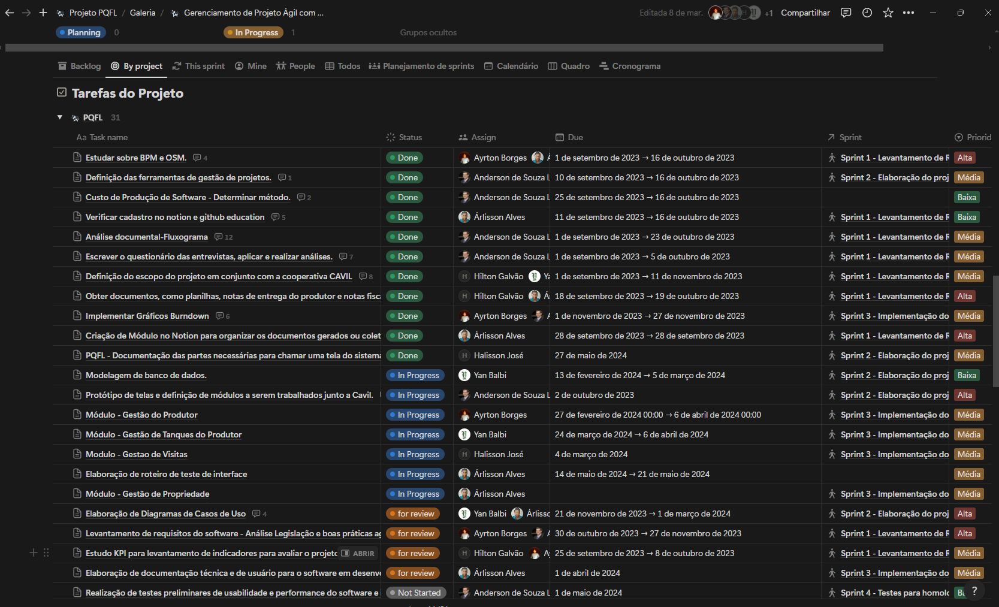
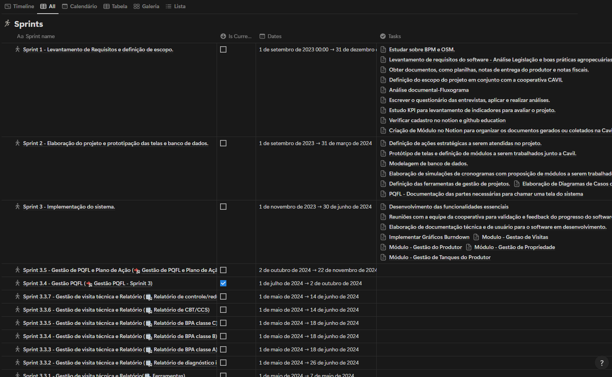
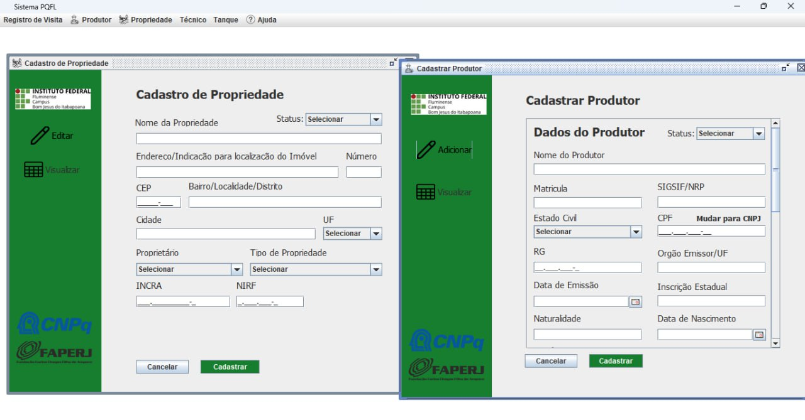

Sistema de Gerenciamento PQFL
Software e app mobile para garantir qualidade do leite e conformidade com IN 76/77.
Panorama rápido
Ferramenta completa para o Plano de Qualificação de Fornecedores de Leite (PQFL), unindo desktop e aplicativo de campo.
- Visitas técnicas, laudos e histórico por produtor.
- Alertas de não conformidade (CPP, CBT, temperatura, etc.).
- Relatórios e gráficos automáticos para auditorias.
Desktop robusto
Gestão completa de produtores, tanques, visitas e laboratório.
App de campo
Coleta offline/online para técnicos, sincronizada em tempo real.
Qualidade
Alertas preventivos e rastreabilidade para auditorias.
Introdução
Software para gerenciamento do Plano de Qualificação de Fornecedores de Leite (PQFL), alinhado às Instruções Normativas 76 e 77/2018 do MAPA. Desenvolvido por uma equipe de 7 integrantes do IFF (Campus Bom Jesus do Itabapoana) em parceria com um laticínio local, financiado por bolsas do CNPq e Faperj.
Automatiza visitas técnicas, avaliação de fornecedores, monitoramento de dados laboratoriais e conformidade regulatória. Com isso, o laticínio ganha eficiência operacional e segurança na cadeia de qualidade do leite.
Versão Mobile
Além da versão desktop, o projeto conta com aplicativo em React Native, integrado a API Laravel 12. Técnicos registram relatórios em campo com sincronização automática, mantendo dados seguros e prontos para decisão.
- Funciona online/offline com sincronização posterior.
- Formulários guiados para visitas técnicas.
- Registro de localização e contexto da coleta.

Algumas fotos do projeto
As fotos registram as reuniões semanais da equipe, que começou com 5 pessoas e cresceu conforme as demandas. A segunda imagem mostra a entrega do primeiro MVP ao laticínio, após um ano de coleta de requisitos, desenvolvimento, homologação e testes.



Objetivo
Desenvolver um software desktop especializado para o gerenciamento completo do PQFL, automatizando controle de qualidade e conformidade de fornecedores. Facilita visitas técnicas, análise de laboratório, gestão de produtores/tanques e gera relatórios e alertas automáticos.
Alertas preventivos
Identifica não conformidades (CPP/CBT/temperatura) e sugere ações corretivas.
Relatórios e gráficos
Saídas automáticas para auditoria e acompanhamento da qualidade do leite.
Rastreabilidade
Histórico completo por produtor, coleta e visita técnica.
Metodologia
O desenvolvimento segue a abordagem ágil Scrumban, unindo práticas de Scrum e Kanban aplicadas no Notion para gestão e visibilidade.
Requisitos
Entrevistas e questionários com a cooperativa e técnicos.
Prototipagem
Fluxos e telas validados em LucidChart e protótipos de alta fidelidade.
Desenvolvimento
Entrega iterativa; ajustes contínuos em regras de negócio e base de dados.
Testes
Usabilidade e performance com feedback semanal do laticínio.
Documentação
Material técnico e preparação para registro no INPI.


Arquitetura do sistema
O Sistema PQFL é dividido em camadas claras:
Frontend
Java Swing (JFrame) com WindowBuilder para acelerar criação visual e manter consistência.
Backend
Java para regras de negócio e integrações; API Laravel para o app mobile.
Banco de dados
MySQL Server + Workbench para modelagem, versionamento de schema e queries otimizadas.
Tela do projeto
